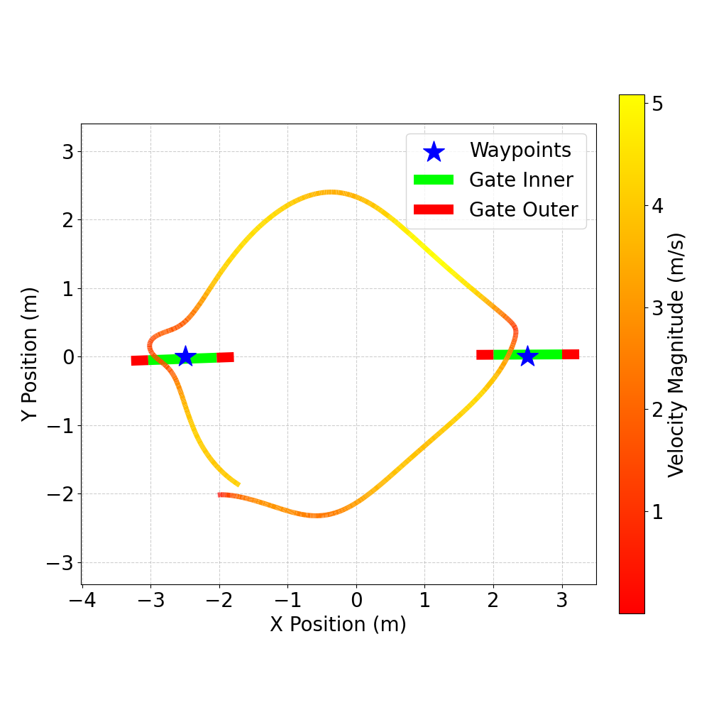
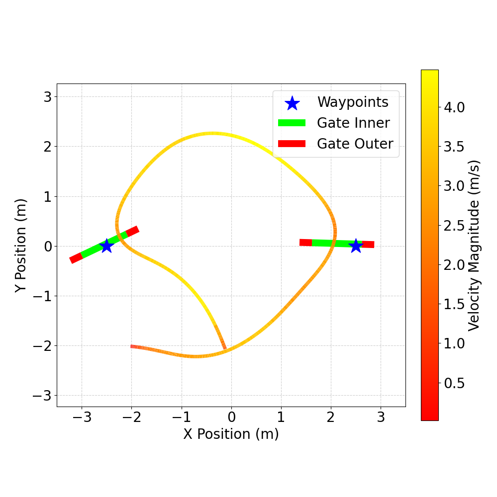
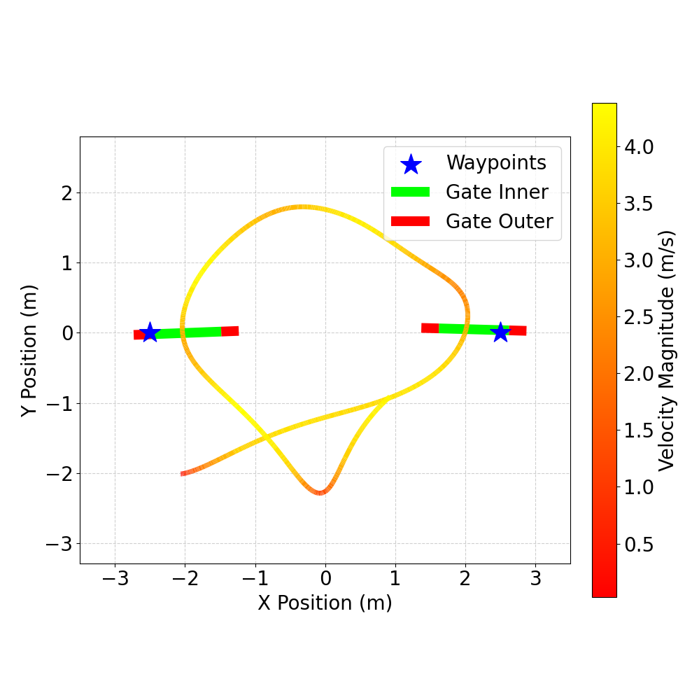

Vision-Guided MPPI for Agile Drone Racing: Navigating Arbitrary Gate Poses via Neural Signed Distance Fields
Abstract
Autonomous drone racing requires the tight coupling of perception, planning, and control under extreme agility. However, recent approaches typically rely on precomputed spatial reference trajectories or explicit 6-DoF gate pose estimation, rendering them brittle to spatial perturbations, unmodeled track changes, and sensor noise. Conversely, end-to-end learning policies frequently overfit to specific track layouts and struggle with zero-shot generalization. To address these fundamental limitations, we propose a fully onboard, vision-guided optimal control framework that enables reference-free agile flight through arbitrarily placed and oriented gates. Central to our approach is Gate-SDF, a novel, implicitly learned neural signed distance field. Gate-SDF directly processes raw, noisy depth images to predict a continuous spatial field that provides both collision repulsion and active geometric guidance toward the valid traversal area. We seamlessly integrate this representation into a sampling-based Model Predictive Path Integral (MPPI) controller. By fully exploiting GPU parallelism, the framework evaluates these continuous spatial constraints across thousands of simulated trajectory rollouts simultaneously in real time. Furthermore, our formulation inherently maintains spatial consistency, ensuring robust navigation even under severe visual occlusion during aggressive maneuvers. Extensive simulations and real-world experiments demonstrate that the proposed system achieves high-speed agile flight and successfully navigates unseen tracks subject to severe unmodeled gate displacements and orientation perturbations.
Gate-SDF: Dynamic Neural Signed Distance Field
Visualization of the dynamically learned Gate-SDF. The network processes raw depth images to predict a continuous spatial field that provides collision repulsion and active geometric guidance through the traversable opening.
Framework Overview

Overview of the proposed framework. At each control step, a depth encoder extracts a latent vector which is duplicated and concatenated with each MPPI-sampled state. The SDF decoder evaluates these points to formulate vision-guided safety constraints. Combined with a gate progress objective, the optimal control sequence is derived via cost-weighted averaging.
Experimental Results
Simulation Results
Robustness to Noise Variations Across Speeds
Visualization of continuous flight trajectories over three consecutive laps on a circular track. Select a configuration below to dynamically load different trajectory visualization results. Each click randomly loads a sample.
Real-World Experiments
For the real-world validation, we employed a customized quadrotor relying exclusively on an onboard embedded Jetson module and a RealSense depth camera for perception.



Trajectories from real-world experiments on a circular track featuring two racing gates subject to position and orientation perturbations. The quadrotor successfully navigated the highly compact track utilizing exclusively onboard depth perception.
BibTeX
@misc{zhao2025visionguided,
title={Vision-Guided MPPI for Agile Drone Racing: Navigating Arbitrary Gate Poses via Neural Signed Distance Fields},
author={Fangguo Zhao and Hanbing Zhang and Zhouheng Li and Xin Guan and Shuo Li},
year={2025},
note={Under review},
}